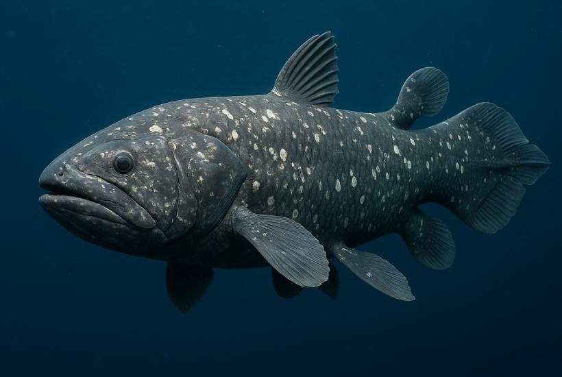
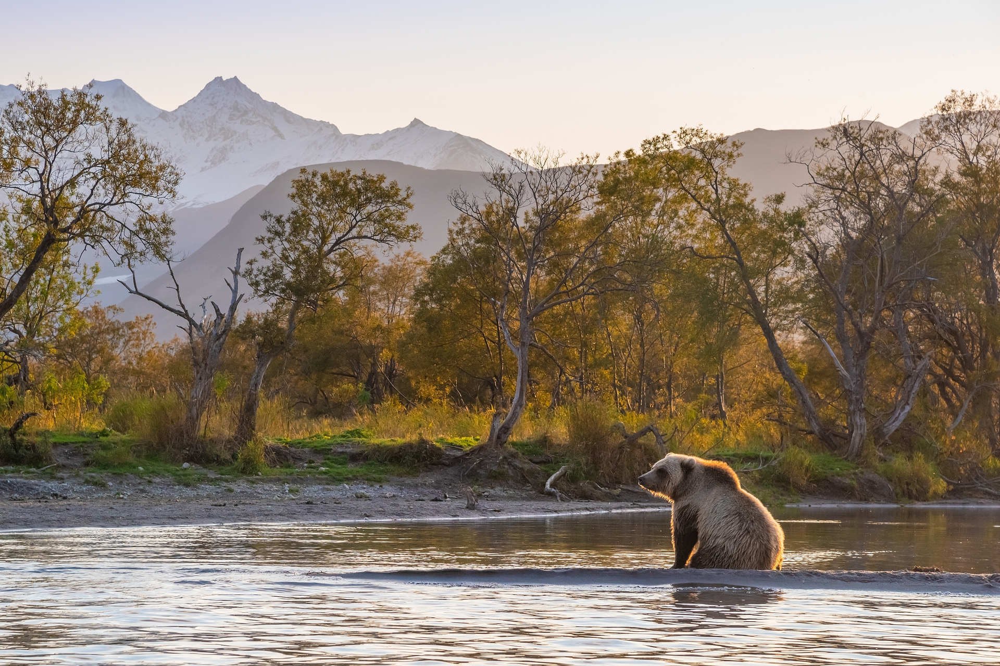
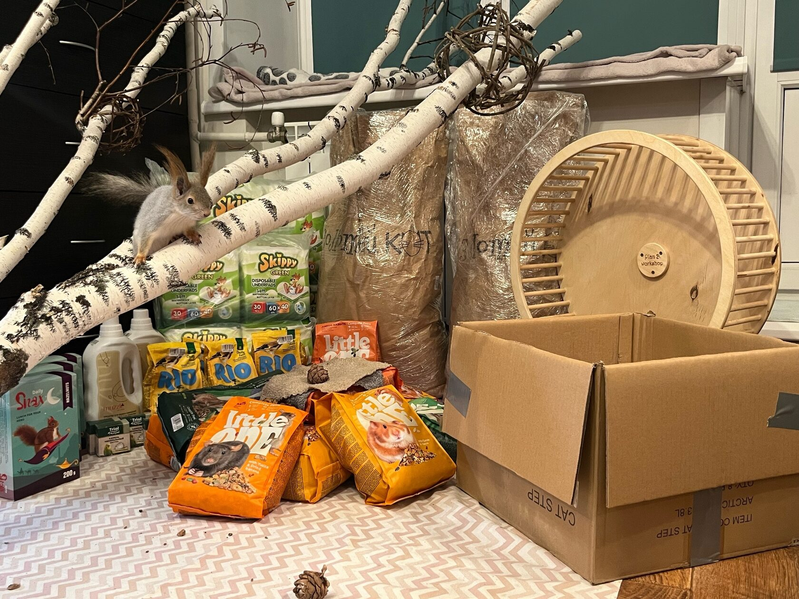

Научные статьи

Возвращение такахе
Как исчезнувшая птица снова появилась в горах Новой Зеландии.

Чакский пекари
Вид, известный только по окаменелостям, оказался жив.

Латимерия
Рыба, пережившая миллионы лет эволюции.

Заповедники мира
Как природные территории помогают спасти исчезающие виды.

Как человек может помочь
Простые действия, влияющие на сохранение биоразнообразия.
Эффект Лазаря
Почему некоторые виды возвращаются спустя десятилетия.